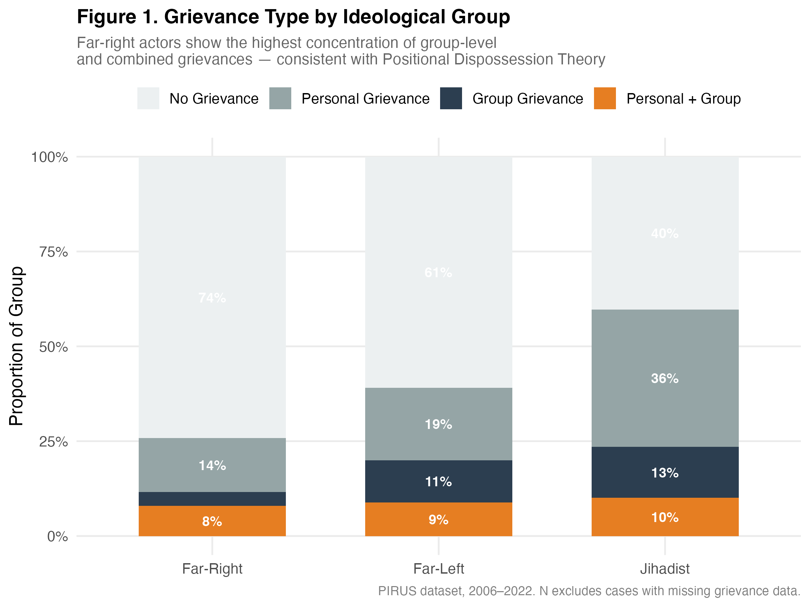
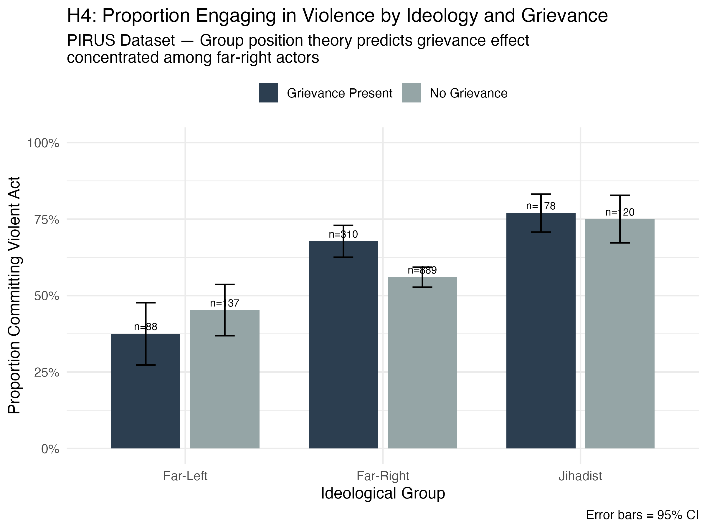
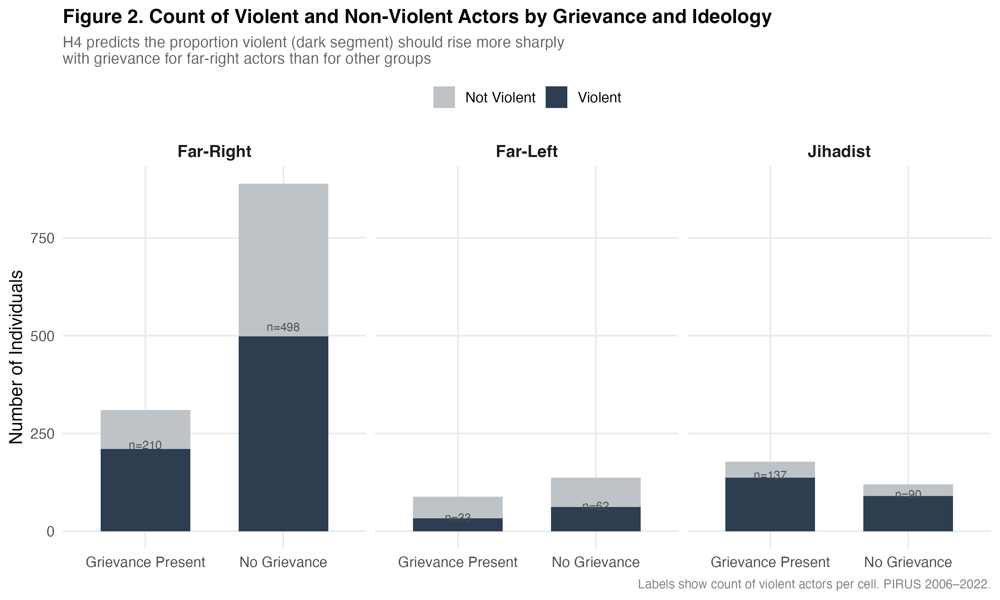
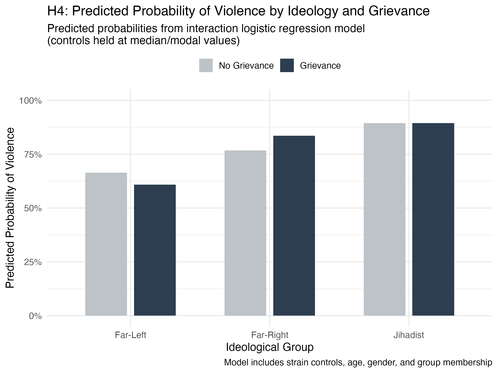
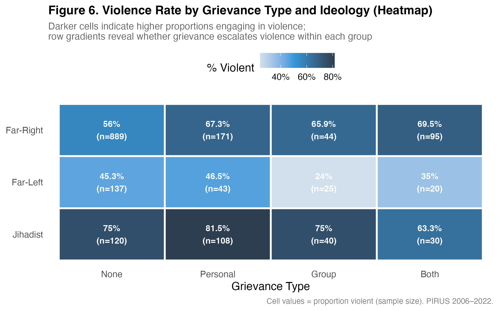
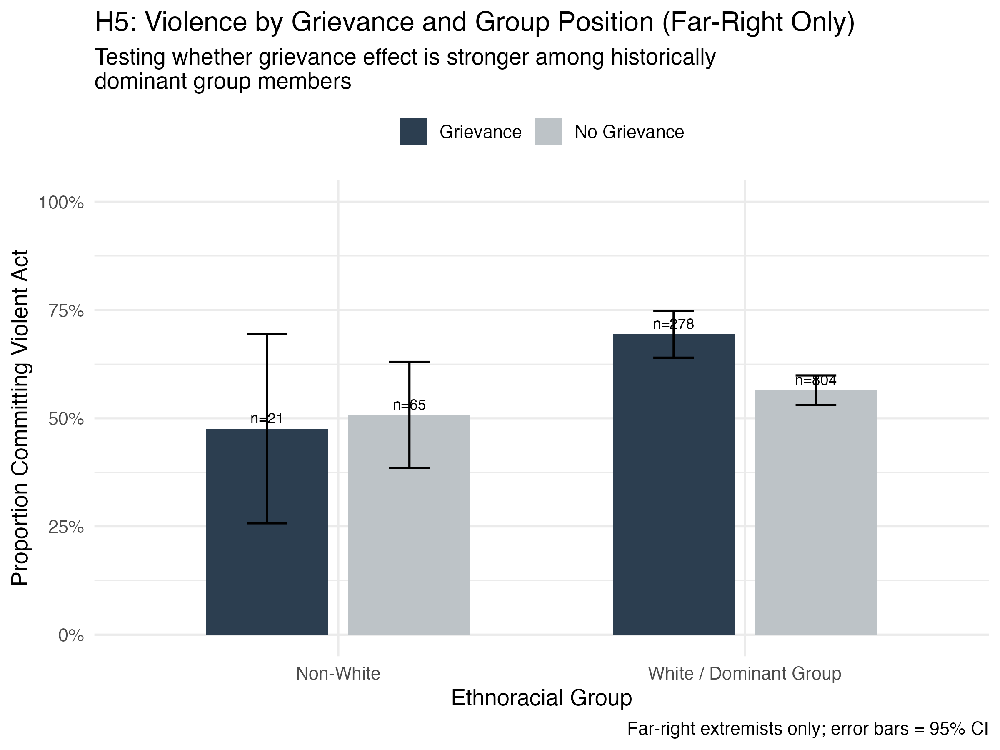
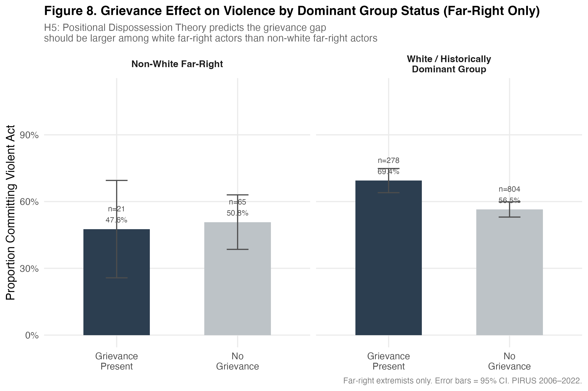
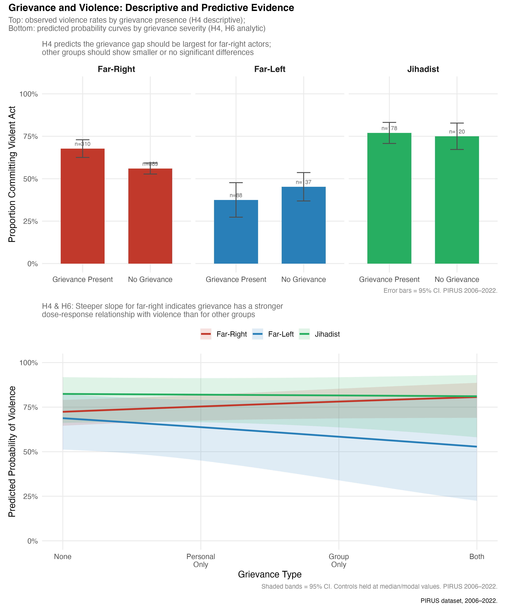

Perceived Status Threat (cultural and moral decline, demographic change, political realignment)
↓
Cultural Framing (victimization, identity threat, blame)
↓
Emotional Regulation (authorized anger, resentment, defensive fear)
↓
Political Opportunity (elite cues, institutional tolerance, weak state response)
↓
Violent Mobilization (force framed as defense and restoration)






Caiani, Manuela and Donatella della Porta. 2018. "The Radical Right as Social Movement Organizations." In The Oxford Handbook of the Radical Right, ed. Jens Rydgren. Oxford: Oxford University Press, 327-347.